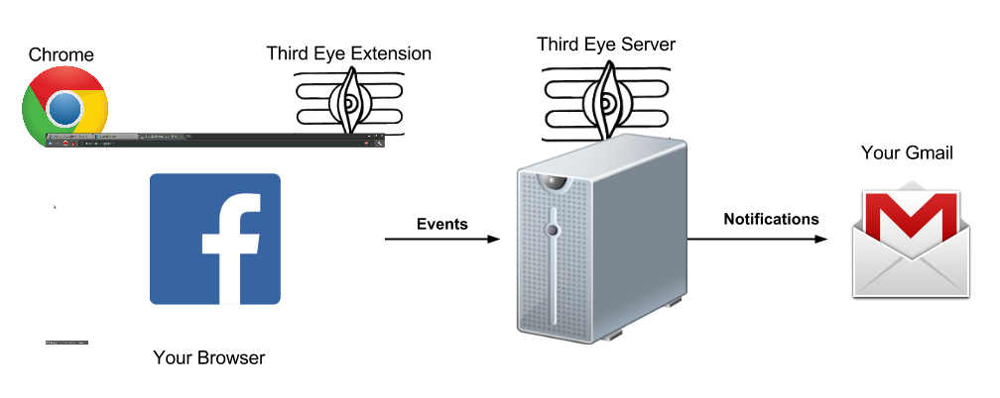

Overview
ThirdEye is continuous authentication system for accessing Facebook through the Google Chrome web browser. It scrapes a user's Facebook activity directly from browser events to create a user's profile. Subsequent user Facebook activity is authenticated against the generated profile. If observed activity deviates significantly from expected behaviour, the user is notified through a pre-established communication method, such as email.
System Architecture
The system consists of a cross-platform Chrome web extension and a server. The extension captures events, which are then sent to the server for user behaviour analysis and profile creation with machine learning techniques. If the server detects an anomaly, it notifies the user using a secondary channel specified at install-time.
Installation
Extension [GitHub repository]
The ThirdEye extension requires the Google Chrome web browser. Follow instructions below to install the extension:
- Download the repository zip and unzip to a desired location (such as your Desktop).
- Go to the settings page in Chrome (click on
 in the top
right of the window) and select 'Extensions'
on the left side of the page.
in the top
right of the window) and select 'Extensions'
on the left side of the page. - Click on
'Load Unpacked Extension' and navigate to where you have unzipped the repository. - Select the folder 'ThirdEyeExtension-master' and click Okay.
- The extension will be added to Chrome and the options page will automatically open.
- Enter your email in the form to create a
secondary notification channel. Close the
options page.
NOTE:If you do not enter your email, ThirdEye will not be able to inform you of anomalous activity. - You should receive an email from the ThirdEye platform indicating that your installation was successful.
- The extension is now active and is listening for Facebook activity across all the current and future tabs in Chrome.
Server (Ubuntu or Windows) [GitHub repository]
The ThirdEye server needs Python 2.7 and MongoDB installed on your system. The server runs automatically on Port 5000.
- Download the repository zip and unzip to a desired location
- Set the proper SMTP/server/email values
in
detection_system.pyin thealarmfunction. - Start the server with:
python server.py
Contributors
Wali Ahmed Usmani, Ivan Beschastnikh
Please contact us at waliusmani(at)gmail(dot)com